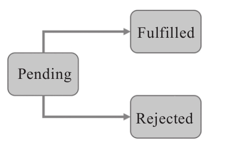

顾名思义，Promise就是一个“承诺”，交给Promise一件事情，它一定会有一个结果的，要么成功要么失败，而且绝对只会有一个结果，不会三心二意有了一个结果之后变卦改为另一个结果。
一个标准的Promise对象有三种状态，预备状态（pending）、成功状态（fulfilled）和失败状态（rejected），如图9-1所示。

图9-1 Promise对象的状态转换图
所有的Promise对象都从预备状态开始，可以立即进入成功状态或者失败状态，也可以在某个异步操作完成之后再决定变为成功状态或者失败状态。
从Promise对象的外部使用者角度只需要关心两个函数：then和catch。
利用then函数和catch函数可以往Promise对象上挂函数，不同的是then挂的是成功状态下调用的函数，而catch挂的是失败状态下调用的函数。
Promise这种模式十分清晰，对应的代码也简单易懂，所以，Web API用于发送AJAX请求的标准函数fetch返回的就是Promise对象。
注意
jQuery的ajax函数返回的是一个类似Promise行为的对象，但是并没有catch函数，其次then函数和标准的Promise也有差别，所以，在这里我们不用jQuery的ajax举例。
我们利用fetch来实现读取RxJS在GitHub上代码库的基本信息功能，代码如下：
fetch('https://api.github.com/repos/ReactiveX/rxjs')
.then((data) => {
console.log('got result: ', data)
})
.catch((error) => {
console.log('catch error: ', error);
});
fetch函数调用返回一个Promise对象，所以可以直接调用then函数，传入一个回调函数，用来接收处理API调用成功的结果。
then这个函数调用也会返回一个Promise对象，所以支持链式调用，在then函数调用之后调用另一个Promise的标准函数catch。
当fetch调用API失败的时候，catch传入的回调函数被调用，同样，catch函数调用也会返回一个Promise对象，所以可以继续链式调用下去。
实际上，fetch返回的Promise对象并不是获得完整的API调用结果就进入成功状态，只要服务器返回的结果是一个合法的HTTP协议报头，即使还没有拿到API的全部结果，也就认为进入了成功状态，对应的then函数所注册的回调函数就会被调用，回调函数的参数是一个response对象，要从这个response对象中得到具体的API返回内容，还需要调用response.json函数，而response.json函数返回的是另一个Promise对象。
假如我们真正想要的是RxJS在GitHub上代码库的标了星的人数，就应该访问返回的JSON结果中的stargazers_count字段。
为了获得真正有意思的stargazers_count，代码需要改进成下面这样：
fetch('https://api.github.com/repos/ReactiveX/rxjs')
.then((response) => {
if (response.status === 200) {
return response.json();
}
throw new Error('Invalid status: ', response.status);
})
.catch((error) => {
console.log('catch response error: ', error);
})
.then((data) => {
console.log(data.stargazers_count);
})
.catch((error) => {
console.log('catch data error: ', error);
});
在上面的代码中，分别新增了一个then和一个catch函数调用，then添加的函数从上游的Promise对象中提取stargazers_count字段。
之前说过，程序之外的一切都是靠不住的，即使这是享誉全球的GitHub的API返回结果，没准哪天GitHub API出了bug，返回的结果就是一个null呢，所以，调用data.stargazers_count有可能也会产生错误异常，这就是再添加一个catch函数的意义。
新添加的catch就是为了捕捉新添加的then可能引发的错误异常。
所以，代码结构顺序是这样：then、catch、then、catch。
实际上，在这个链式调用过程中，产生的任何错误异常都会沿着调用顺序向下游传递，直到遇到第一个catch，所以，实际上，我们完全可以只使用一个catch来捕捉多个then产生的异常。
提示
看到Promise的使用也有上游下游，也有链式调用，是不是觉得Promise和RxJS的Observable很类似？两者在范畴论中都属于Monad类型，本书不会详细介绍Monad，有兴趣的读者可以参考相关文档 [1] 。
进一步改进代码，如下所示：
fetch('https://api.github.com/repos/ReactiveX/rxjs')
.then((response) => {
if (response.status === 200) {
return response.json();
}
throw new Error('Invalid status: ', response.status);
})
.then((data) => {
console.log(data);
})
.catch((error) => {
console.log('catch error: ', error);
})
现在，整个链式调用中只使用了一个catch，但是这一个catch能够捕捉整个调用链上产生的所有错误异常，更重要的是，链式调用上可以有异步操作，却不会出现“回调函数地狱”那样难以维护的代码，也不需要每一层都显式地往外传递异常。
实际上，每一个then所注册的函数中，只需要专心地处理业务逻辑就可以了，错误异常都交给一个catch来处理就足够。
看起来，Promise是异步操作下异常处理的完美解决方案。
但是，真是这样吗？
Promise的异常处理依然存在不足之处。最主要的缺点就是，Promise不能够重试。实际应用中，遇到一个失败的情况，重试是一个不错的选择。比如一个对服务器的API调用，第一次访问失败，可能只是网络临时发生故障，或者服务器临时出错，如果过一会儿自动重新调用一次，可能就能返回正确的结果了，这比不做重试直接显示给用户一个出错提示更好，要知道，用户看到出错提示之后，很可能也会选择重试，既然这样，还不如让这个重试的工作由代码来做。
前面已经说过，Promise一旦进入成功状态或者失败状态，就再不能改变状态，这是一个简单而有效的设计，但是却也带来了缺陷。还是以调用服务器的API为例，当fetch函数返回一个Promise，如果这次调用失败了，这个Promise对象也就走到头了，不可能让它重新尝试一次。
换句话说，根本不可能有下面这样的代码。
fetch('https://api.github.com/repos/ReactiveX/rxjs').retry(3);
不能重试是Promise的一个缺陷，另外，Promise还有一个缺点是，并不强制要求异常被捕获。
在上面使用fetch的代码中，如果没有添加任何catch函数调用，那么如果真的发生了错误异常，那这些错误异常就真的丢失掉了，这不是我们想要的，我们想要的是发现这些错误之后进行必要的处理。忽略异常之后，虽然程序还在运行，但是程序的状态已经不对了，这会带来不可预料的后果。
可见，Promise也并不是一个完美解决方案。
[1] 可参考Monad资料https://en.wikipedia.org/wiki/Monad(category_theory)。